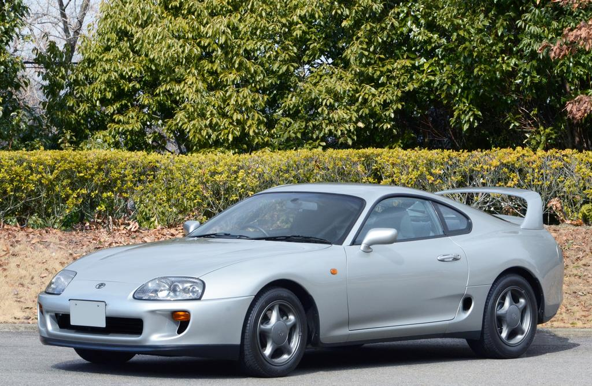
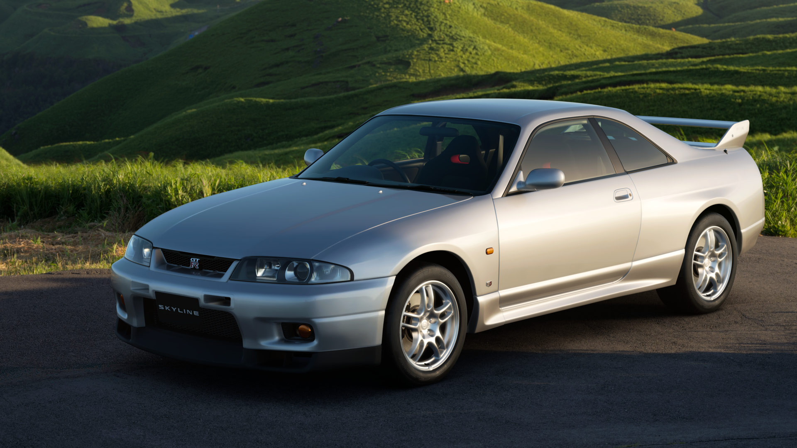
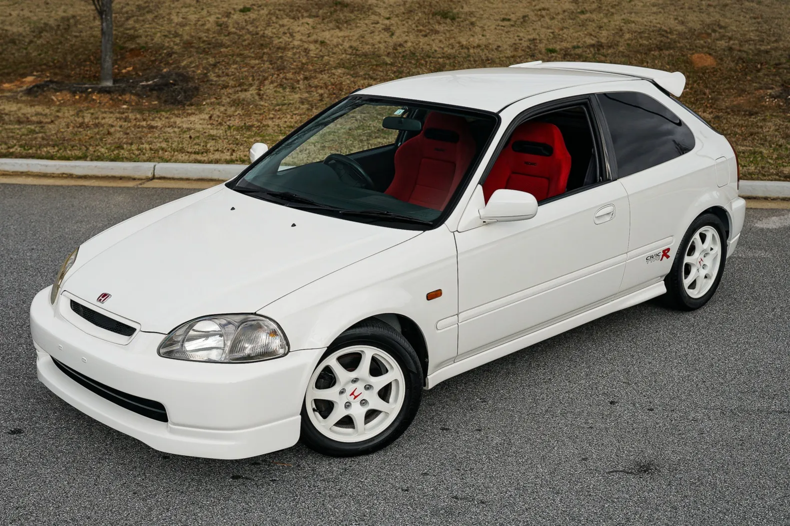
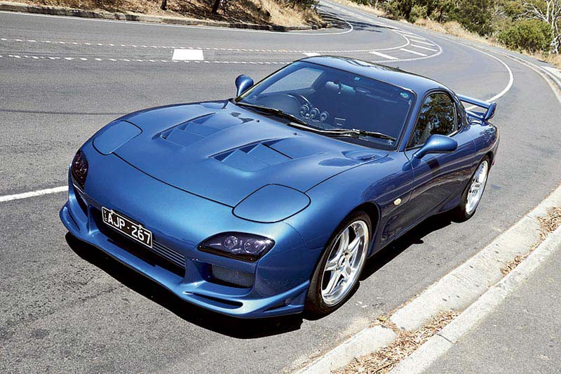

Автомобили
Каталог автомобилей




Nissan Skyline GT-R R33
Nissan Skyline GT-R поколения R33 появился в 1995 году. Это спортивное купе с системой полного привода ATTESA E-TS и независимой многорычажной подвеской.
Автомобиль оснащён рядным шестицилиндровым двигателем RB26DETT объёмом 2,6 литра с двумя турбокомпрессорами. Заявленная мощность японской версии составляет 280 лошадиных сил.
Toyota Supra JZA80 RZ
Supra JZA80 появилась в 1993 году. Это спортивное купе с посадочной формулой 2+2. Передние сиденья рассчитаны на водителя и пассажира, а задние места имеют меньшие размеры.
Японская версия RZ получила трёхлитровый двигатель 2JZ-GTE с двумя турбокомпрессорами и заявленной мощностью 280 лошадиных сил.